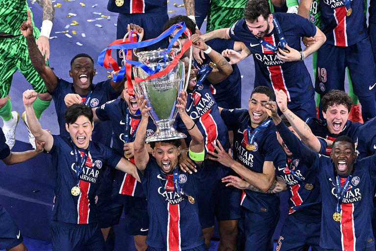

Desire Doue scored twice to inspire Paris St Germain to their first European Cup triumph with an emphatic 5-0 win over Inter Milan in a totally one-sided Champions League final on Saturday.
After losing the final to Bayern Munich in 2020, Luis Enrique's PSG side, who teetered on the brink of elimination in the league phase this season, finally claimed the trophy their big-spending Qatari owners have craved.

PSG put on a masterclass which the more experienced Inter side had no answer to, scoring twice in the opening 20 minutes through former Inter defender Achraf Hakimi and Doue. The 19-year-old Doue was on target again in the 63rd minute, Khvicha Kvaratskhelia scored 10 minutes later and substitute Senny Mayulu netted three minutes from time to seal the biggest winning margin in a Champions League final.
Before kickoff the Italian fans sang "There's Only Inter", the club's anthem, but on the pitch their side went missing and PSG ran riot to secure a richly deserved win.
There's no feeling in football like winning the Champions League 🥹🏆
#UCLFinal | #SSUCL
pic.twitter.com/LVPqrZvimD — SuperSport Football ⚽️ (@SSFootball)
May 31, 2025